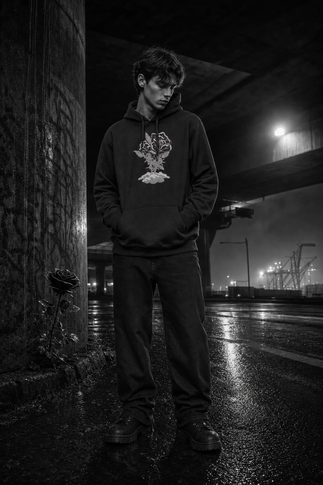
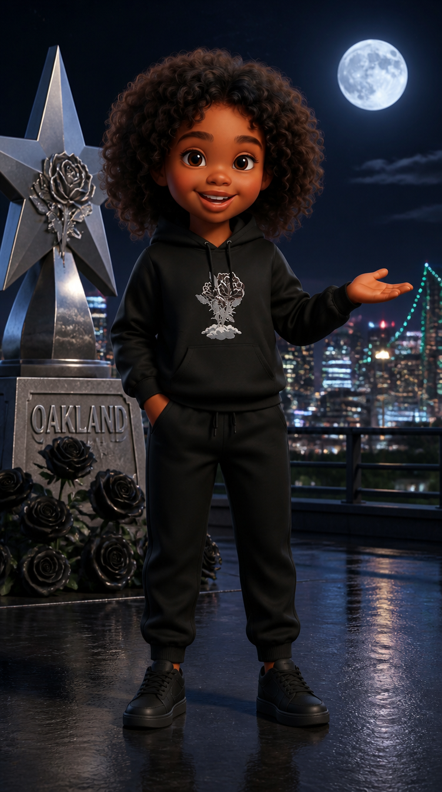

A real model meets Skyy. Their matching clothes create recognition. The train carries us through four collection worlds—and saves its biggest reveal for the Kids line.
This is a source and prompt board. Labels are production notes; the commercial has no dialogue, voiceover, captions or title cards. Existing garment lettering remains intact.
Actual front models × archived Skyy looks × collection heroes
The cast and the world.
Signature · sg-009
The Sherpa Jacket
Human model · source frontArchived Skyy look · details to reconcileHero piece: The right-hand sculpted metallic SR rose: use the exact rose and flowing metal curve detail, without the large word monument.
Place a faithful, scaled architectural relief of the hero's sculpted rose in the upper window divider behind the pair. Its warm metallic edge catches the passing light. Keep it in the carriage background and clear of both jacket roses. Do not import the entire hero sky, skyline or word monument.
The model notices the same red rose on Skyy's jacket and his own, then opens a hand toward the free place beside him.
Source check: Preserve the open black shell, white fleece lining, collar and exact red chest rose from the product/model. Archive embroidery is simplified. Cream trousers and sneakers are mascot styling, not additional matched SKUs.
Black Rose · br-004
BLACK Rose Hoodie

Human model · source front

Archived Skyy look · details to reconcileHero piece: The right-hand black five-point star with silver rose and leaf relief, plus its dark plinth.
Through the broad side window, the exact star/rose monument passes as a collection-world landmark, with the source Bay Bridge behind it. Keep the black form, silver edge, rose shape and leaves; no blue tint, generic star replacement or duplicated monument. Window glass and parallax keep the viewer inside the moving train.
The Black Rose model holds the internal carriage door for Skyy; she pauses beside him and gives a small appreciative nod.
Source check: Match the complete botanical rose/cloud artwork and its relative scale to the product front. Preserve black drawstrings, kangaroo pocket and cuffs. Do not import the archive's blue background or treat mascot joggers as a matched SKU.
Love Hurts · lh-004
Love Hurts Bomber Jacket
Human model · source frontArchived Skyy look · details to reconcileHero piece: The pointed thorn-lined arch and the red rose under a glass cloche at the end of the aisle.
Adapt the exact arch outline to the internal carriage doorway, at believable train scale. Secure a small glass cloche with one red rose in a recessed shelf beyond the model/mascot. The rose's placement motivates the camera slide. Preserve the physical rose/cloche shape; exclude the cloaked figure, title monument and candles.
The model shifts an open hand toward an empty seat. Skyy looks from the offered seat to him; the matching red script makes their connection legible.
Source check: Archive has zipper-like edges; correct to the exact source button-front construction before scene generation. Preserve white body, black sleeves, ribbing and red lettering placement. Keep model's hood-up styling; mascot hood position follows its verified character reference. Do not feature mascot joggers as lh-002 until separately matched.
Kids Capsule · kids-001
Kids Colorblock Hoodie Set — Red/Black
Human model · source frontArchived Skyy look · details to reconcileHero piece: The crown-topped black tufted throne with carved gold outline and lion-head arms, surrounded by stepped citylike forms.
Place a faithful throne-seat adaptation against the end wall of the final observation carriage, with the source stepped forms integrated as shallow wall ribs. Reveal it behind the standing Kids pair when the doors open. Preserve black upholstery, crown and sculpted arms. Do not import the LH-clothed mascot from this hero, 'The Heir' or 'Next Up' text; cast comes only from corrected Kids anchors.
At last a child meets Skyy at her own eye level. The child recognizes their matching outfit and offers Skyy the place beside the window.
Source check: Reconcile archive with the current source's white hoodie drawstrings, angular red/black/white panels, chest/thigh rose marks and single right-arm patch. Preserve exact child identity. Photographic child and stylized Skyy remain distinct.
Kids Capsule · kids-002
Kids Colorblock Hoodie Set — Purple/Black
Human model · verified alternate frontArchived Skyy look · details to reconcileHero piece: The crown-topped black tufted throne with carved gold outline and lion-head arms, surrounded by stepped citylike forms.
Place a faithful throne-seat adaptation against the end wall of the final observation carriage, with the source stepped forms integrated as shallow wall ribs. Reveal it behind the standing Kids pair when the doors open. Preserve black upholstery, crown and sculpted arms. Do not import the LH-clothed mascot from this hero, 'The Heir' or 'Next Up' text; cast comes only from corrected Kids anchors.
The purple-set child and Skyy exchange a small smile beside the window, repeating the red-set recognition in a new colorway.
Source check: Use the verified product-card-alt child, not the demoted ghost primary. Reconcile hoodie drawstrings, lavender sleeves, seam layout, rose motifs and patch against verified front and product sources; preserve the purple/lavender palette seen in sources rather than literalizing the legacy colorway name. Archive is a look reference, not construction authority.
Both open jackets and red roses visible immediately.
A crisp carriage-door click starts the rail rhythm; bass pulse enters immediately.
Shot direction and prompts
Camera: 35mm, camera at the adult's chest height; medium two-shot; slow 20cm push.
Image: Inside the moving Signature carriage, the exact adult model occupies center-left and Skyy, in her corrected matching Sherpa outfit, center-right. Frame both faces and jacket fronts clearly from the first image. Skyy has just entered the aisle and is looking up at the model; he is noticing her. Passing bridge trusses are visible through the side window. Set feet firmly on the carriage floor. No exterior establishing shot. HERO INTEGRATION: Place a faithful, scaled architectural relief of the hero's sculpted rose in the upper window divider behind the pair. Its warm metallic edge catches the passing light. Keep it in the carriage background and clear of both jacket roses. Do not import the entire hero sky, skyline or word monument.
Motion: For three seconds Skyy raises her eyes toward the adult; he looks from her red chest rose to her face. Gentle carriage sway only; keep both torsos front-facing. Camera pushes 20cm. Finish on mutual recognition.
Edit: Straight cut on the adult's glance.
3–6s
The match
A sustained second view of the exact jacket construction.
A short fabric movement and rail clack land on the cut.
Shot direction and prompts
Camera: 50mm, slight lower height for readable paired jacket fronts; no extreme macro.
Image: Continue the same accepted Signature scene with unchanged cast, scale, lighting and outfit details. The adult extends an open hand toward the empty place beside him. Skyy smiles slightly. Keep both red rose details and fleece edges readable in one continuous image, with background softened. HERO INTEGRATION: Place a faithful, scaled architectural relief of the hero's sculpted rose in the upper window divider behind the pair. Its warm metallic edge catches the passing light. Keep it in the carriage background and clear of both jacket roses. Do not import the entire hero sky, skyline or word monument.
Motion: The adult makes one short open-hand invitation; Skyy gives a single small nod. No garment handling, unzipping or finger contact. At the end the camera moves behind an opaque brass door jamb until the image is fully occluded.
Edit: Full door-jamb occlusion permits the cut to the next collection. No on-screen outfit morph.
6–10s
A door held open
Both complete rose/cloud chest graphics unobstructed.
Low metal latch and a deeper rail pulse; same musical motif.
Shot direction and prompts
Camera: 35mm, child-adult shared two-shot, slight low angle; camera glides out from an opaque foreground jamb.
Image: Inside the Black Rose carriage, reveal the exact BR-004 adult already holding an INTERNAL doorway fully open; his arm stays beside his body so the chest graphic is clear. Skyy, in her corrected BR-004 look, stands just inside the doorway facing him and camera. Preserve safe floor contact and at least an arm's length of space. A silver reflection defines black fabric against black metal. HERO INTEGRATION: Through the broad side window, the exact star/rose monument passes as a collection-world landmark, with the source Bay Bridge behind it. Keep the black form, silver edge, rose shape and leaves; no blue tint, generic star replacement or duplicated monument. Window glass and parallax keep the viewer inside the moving train.
Motion: Begin with the door already open. The model holds his position and gives a slight welcoming nod; Skyy nods back. Only the camera slides 30cm past the foreground jamb. No walking through a closing door, no shoulder rotation, no animated chest graphic.
Edit: Cut on the nod, keeping left-to-right travel.
10–14s
The shared look
Hold source artwork readable for at least two seconds.
Rail clacks become the edit rhythm, no added voice.
Shot direction and prompts
Camera: 50mm medium two-shot; minimal motion, window reflections supply energy.
Image: Use the accepted Black Rose scene as continuity authority. The adult and Skyy stand near the window in three-quarter front, exchanging a small confident smile. Their black hoodies, silver graphics and different visual styles are clearly distinct. Passing bridge shadows make the carriage feel in motion. Do not import any blue from the archived mascot scene. HERO INTEGRATION: Through the broad side window, the exact star/rose monument passes as a collection-world landmark, with the source Bay Bridge behind it. Keep the black form, silver edge, rose shape and leaves; no blue tint, generic star replacement or duplicated monument. Window glass and parallax keep the viewer inside the moving train.
Motion: Both shift their gaze toward the next door without turning torso or feet. A silver window reflection moves across the fixed carriage surfaces. Camera slides 40cm right behind an existing opaque foreground door jamb until it fully occludes the view; the jamb stays physically fixed.
Edit: Opaque cut to crimson carriage. Outfit changes occur only between shots.
14–18s
Make room
Button front, contrasting sleeves and exact script placement are central.
A warmer harmonic layer joins the same beat; soft carriage rattle.
Shot direction and prompts
Camera: 40mm, controlled lateral slide, medium two-shot.
Image: Inside the Love Hurts carriage, the exact hood-up human model and Skyy in the corrected button-front LH jacket face each other at slight angles while both garment fronts face camera. The model offers the empty window-side seat with one open hand. A real rose and crimson upholstery establish the collection. White jackets remain white under neutral face and garment light. No zipper on Skyy's jacket. HERO INTEGRATION: Adapt the exact arch outline to the internal carriage doorway, at believable train scale. Secure a small glass cloche with one red rose in a recessed shelf beyond the model/mascot. The rose's placement motivates the camera slide. Preserve the physical rose/cloche shape; exclude the cloaked figure, title monument and candles.
Motion: The model opens one hand toward the seat; Skyy looks at the offered space then back to him. No sitting action or jacket opening in this shot. Short lateral camera travel reveals the rose beside the window. Keep button rows and lettering stable.
Edit: Cut on Skyy's gaze toward the far door.
18–21s
The held reveal
Intentional three-second anticipation after LH product view.
Brief reduction of music, pneumatic door release, then a strong downbeat into Kids.
Shot direction and prompts
Camera: Forward-facing 35mm view from inside the train; gentle approach, no visible people.
Image: Show the closed internal door at the end of the Love Hurts carriage, framed by crimson upholstery and dark window arches. A slim warm rose-gold seam of light appears around the door. Side windows show bridge structure sliding past. Withhold the Kids outfits and characters. This is the same train, not a fantasy portal. HERO INTEGRATION: Adapt the exact arch outline to the internal carriage doorway, at believable train scale. Secure a small glass cloche with one red rose in a recessed shelf within the fixed doorway recess. The rose's placement motivates the camera slide. Preserve the physical rose/cloche shape; exclude the cloaked figure, title monument and candles.
Motion: Camera gently approaches the fixed closed door. During the last second its two panels begin to part by a few centimeters. Hard cut on that first opening movement to the next shot with doors already open. Do not require an opening panel to fill the frame. No people generated in this transition plate.
Edit: Hard cut on the mechanical opening movement to the already open Kids carriage.
21–25s
Kids reveal — red
Full red look and chest/thigh emblems; hoodie drawstrings and right-arm patch checked.
Full musical motif resolves on the reveal; rail rhythm stays underneath.
Shot direction and prompts
Camera: 28mm at the real child’s eye level; begin with full outfits visible and widen to reveal the throne and observation window.
Image: The internal doors are already open on the final observation carriage. The exact Kids-001 photographic child and Skyy in the corrected matching red/black/white set stand beside each other with faces and full outfit fronts visible. Child center-left, Skyy center-right, no overlapping silhouettes. Warm bridge daylight opens the depth behind them. This is the largest spatial and emotional reveal so far: the window is wider, the light clearer, the connection at eye level. Keep architecture dark with restrained rose-gold accents; let the clothes carry color. HERO INTEGRATION: Place a faithful throne-seat adaptation against the end wall of the final observation carriage, with the source stepped forms integrated as shallow wall ribs. Reveal it behind the standing Kids pair when the doors open. Preserve black upholstery, crown and sculpted arms. Do not import the LH-clothed mascot from this hero, 'The Heir' or 'Next Up' text; cast comes only from corrected Kids anchors.
Motion: Begin with both complete outfits already visible. Over four seconds ease the camera backward just enough to reveal the crown-topped throne and broader observation window behind them. Both characters remain front-facing. The real child looks at Skyy; she answers with a small smile. Gentle shared train sway; no dance, jump, age change or body morph.
Edit: Clean cut on matching composition to purple; no animated recolor.
25–28s
Kids reveal — purple
Purple panel geometry and sleeve patch must match accepted fronts; no floating packshot substitute.
Bright percussive accent on the colorway cut, no lyric or speech.
Shot direction and prompts
Camera: Same child-eye-level composition and train window alignment as T07, separate source-bound take.
Image: In the same observation carriage geometry and daylight, show the exact verified alternate Kids-002 photographic child and Skyy in the corrected purple/lavender outfit. Show both complete figures from hair to shoes, with faces, hoodie fronts, drawstrings and trouser silhouettes clear; preserve a minimum two-second unobstructed full-length hold. Keep the real child's hood-up source appearance and Skyy's distinct hair/face. This is a clean editorial colorway cut, never a transformation of the red child into another person. HERO INTEGRATION: Place a faithful throne-seat adaptation against the end wall of the final observation carriage, with the source stepped forms integrated as shallow wall ribs. Maintain the already established throne and open internal doorway; no new door-opening reveal. The throne may remain soft in the background of the closer final framing. Preserve black upholstery, crown and sculpted arms. Do not import the LH-clothed mascot from this hero, 'The Heir' or 'Next Up' text; cast comes only from corrected Kids anchors.
Motion: Three-second nearly still hero moment. Child and mascot exchange one restrained smile and a tiny gaze movement. Keep torso, feet and garment panels fixed in orientation. Continue the window parallax at the same direction and speed.
Edit: Cut back to the accepted red-pair scene for the emotional payoff.
28–30s
The invitation returns
Kids owns the last image.
Music lands cleanly with the last rail clack. No announcement or voiceover.
Shot direction and prompts
Camera: 50mm shared close-medium on red child and Skyy, faces plus chest marks visible.
Image: Return to the established Kids-001 child and red-outfit Skyy, unchanged, beside the observation window. The real child now offers Skyy the place beside the window using a small open-hand gesture, echoing the first adult's invitation. Skyy looks at the child with a quiet smile. Hold the matching red clothes in the last frame. The train is still moving beyond the glass. HERO INTEGRATION: Place a faithful throne-seat adaptation against the end wall of the final observation carriage, with the source stepped forms integrated as shallow wall ribs. Maintain the already established throne and open internal doorway; no new door-opening reveal. The throne may remain soft in the background of the closer final framing. Preserve black upholstery, crown and sculpted arms. Do not import the LH-clothed mascot from this hero, 'The Heir' or 'Next Up' text; cast comes only from corrected Kids anchors.
Motion: One simple invitation gesture from the real child; Skyy gives a tiny accepting nod. No actual seating action, no new character, no cutaway. Settle for the final half-second with faces and product fronts readable.
Edit: End on the living product-and-character moment; no title card.
One train. Clear visual rules.
Camera advances left-to-right along the train. Window parallax stays in one direction. Cut behind opaque internal door jambs to change the mascot's collection outfit; never morph clothes in view. Only one Skyy per shot.
Each carriage keeps the same train geometry while one exact hero detail and its collection materials establish a different world. Human and mascot remain distinct characters. Hero figures and outfits are excluded from environmental references.
Normalize the five archived looks against the real product fronts, review them, then build the carriage and two-character anchors. Each motion request starts from its reviewed image. The previous proof’s unwanted body rotation is explicitly excluded.
No new paid jobs in this prompt-preparation round. Corrected looks, carriage anchors and the final commercial are not yet rendered. Existing paid-rendering authorization remains recorded; publication has not been authorized.